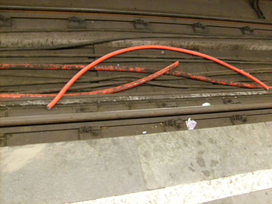
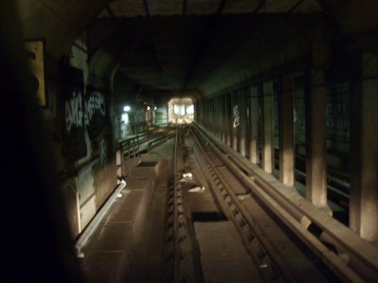
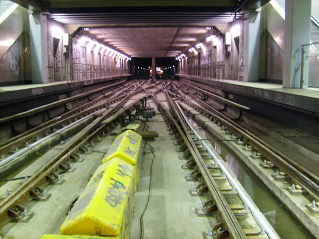
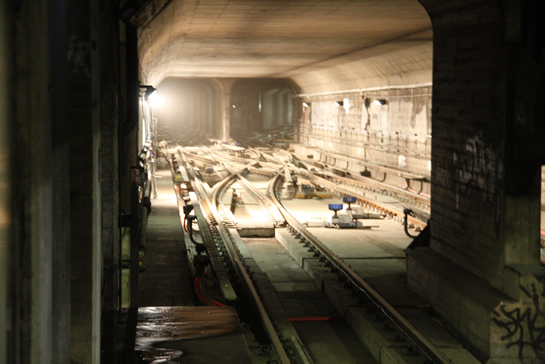

Wisselcomplexen Beurs en Leuvehaven compleet vernieuwd…
- woensdag 17 september 2008 23:00
- Geschreven door Joachim
Van 28 juli tot en met 8 augustus reden de metro's op de Erasmuslijn niet tussen de stations Wilhelminaplein en Centraal Station. Reden: een omvangrijke bouwklus die, tussen twee evenementen in, binnen 12 dagen geklaard moest worden. Een complete vernieuwing van de wisselcomplexen Beurs en Leuvehaven. Een jaar planning ging vooraf aan de grootste buitenbedrijfstelling van de afgelopen veertig jaar in de Rotterdamse metro.
Buitenbedrijfstelling
De werkzaamheden werden uitgevoerd tijdens een buitenbedrijfstelling. Het deel van de metrobaan waar dan werkzaamheden worden uitgevoerd, wordt met diverse veiligheidsmaatregelen van de metrobaan “afgekoppeld”. De derde rail wordt onderbroken, mogelijke stroomtoevoer wordt afgesloten en gelijkrichterstations worden uitgeschakeld. Het dienstreglement (DRVM) is dan niet van toepassing. Er ontstaat een bouwplaats, die tijdens de werkzaamheden in beheer is bij de hoofdaannemer.
Nadat het werkgebied officieel buiten bedrijf gesteld werd, begon men met het verwijderen van de infrastructuur van de spoorbeveiliging. Zo kon de aannemer zonder problemen de sporen verwijderen. De relaisruimtes werden uitgezet, waarna het beveiligingsysteem uit de baan genomen kon worden. Dit werd verzorgd door de afdeling Technische Automatisering (Onderhoud Infra) van de RET.
Na de demontage van de spoorbeveiliging werd gestart met het verwijderen van de oude spoordelen. Een proces dat gefaseerd plaats vond, omdat er aan één spoor gewerkt werd, en het andere spoor als aan/afvoerspoor moest blijven fungeren, waarover ook werkmaterieel moest kunnen blijven rijden. Het mag dus duidelijk zijn dat de vernieuwing van een wisselcomplex niet in een nacht of tijdens een buitendienststelling plaats kan vinden. Het aansluitingswissel naar de verbindingsboog tussen station Leuvehaven en station Blaak werd overigens niet vervangen, omdat dit pas later, tijdens de bouw van de Oost-Westlijn (huidige Calandlijn), aangelegd is.
Tijdens de buitenbedrijfstelling was een aantal aannemers actief in de tunnel. De vernieuwing van de wisselcomplexen werd uitgevoerd door Strukton. Dit werk was de aanleiding voor de buitenbedrijfstelling. Omdat normaal de tunnel alleen gedurende de nachten beschikbaar is en een groot deel van het buitenbedrijfgestelde traject niet nodig was voor de vernieuwing van de wisselcomplexen is van de gelegenheid gebruik gemaakt om zoveel mogelijk werkzaamheden in de tunnel uit te voeren. BAM zorgde voor de nieuwe tunnelverlichting en de aannemer Wolter en Dros zorgde voor de aanleg van een zogenaamde “droge brandblusleiding” in de tunnel. De twee laatst genoemde middelen komen voort uit de nieuwe strengere eisen op het gebied van tunnelveiligheid. Aannemer Haverkort Voormolen voerde voorbereidende werkzaamheden uit aan de infrastructuur van het Centraal Station in verband met de geplande uitbreiding van dit metrostation. De werkzaamheden konden precies uitgevoerd worden tijdens deze buitenbedrijfstelling.
Na het verwijderen van de sporen ontstond een kale “railopstort” (betonnen ondergrond van de metrosporen), waar alleen nog “stiften” uit omhoog staken (bevestigingsdraden voor de spoorstaven). Het afslijpen van deze stiften zorgde voor een enorme stofontwikkeling, die door extra aangebrachte ventilatie redelijk onder controle kon worden gehouden. Na de slijpwerkzaamheden ontstond een kale bak, waarop de nieuwe sporen gelegd konden worden. Daarvoor moesten in beide wisselgebieden eerst nog 2500 nieuwe gaten (3,5 cm diameter, 14 cm diep) geboord worden in de railopstort en 2500 nieuwe “stiften” in gelijmd worden, zodat de sporen opnieuw stevig bevestigd konden worden. Nieuw in de wissels zelf zijn de wisseltongen die niet over glijplaten bewegen, maar over rollen. Deze moderne en beproefde techniek van hedendaagse spoorwegbouw vergt minder onderhoud.
Tijdens de buitenbedrijfstelling werden ook 10kV-kabels en 750V tractiekabels vernieuwd. De 750V-kabels van gelijkrichterstation Leuvehaven werden vernieuwd, evenals de 10Kv-kabel tussen station Leuvehaven en station Beurs. Ook zijn de baanscheiders van gelijkrichterstation Leuvehaven vervangen voor nieuwe exemplaren. Een baanscheider is opgenomen in de pluszijde van de tractiestroominstallatie van de metro en kan delen van de stroomrail uitschakelen. De baanscheiders waren van oorsprong tussen de metrobaan geplaatst in gele kasten, maar zijn nu opgenomen in een ruimte van het gelijkrichterstation.

Nieuwe 10.000 voltkabels. De oude kabels zijn meer dan 40 jaar oud.
Toen de spooraannemer gereed was met de aanleg van de sporen en spoordelen van de wisselcomplexen, werden de nieuwe luskabels voor de spoorbeveiliging gelegd. Nadat ook dit gebeurd was en de spoorbeveiliging voor het grootste deel aangesloten was, werd gestart met het terugplaatsen van de stroomrail en het aansluiten ervan. Daar waar de stroomrail geaard was, werd dit ongedaan gemaakt. Op vrijdagmiddag 8 augustus om 12.30 uur arriveerde een driewagentrein met twee bestuurders (een aan elke kant, waardoor gemakkelijk “kopgemaakt” kan worden) voor proefritten over de beide wisselcomplexen. Nadat de werking van de spoorbeveiliging goedgekeurd was, werden de werkzaamheden om 14.30 uur afgerond en was ook de overgebleven rommel van de omvangrijke bouwklus al grotendeels opgeruimd.

Eerste proefrit over wisselcomplex Leuvehaven. Aan de linkerzijde het aantakkend wissel van de verbindingsboog (Leuvehaven - Blaak v.v.).
Materieel
Er werd divers materieel gebruikt om materialen en spoordelen aan te voeren, zoals diverse “krollen” (rollende kraan of railshovel) en een van de RET-locomotieven met platte wagens. Met de laatst genoemde combinatie werd ook gesloopt en verwijderd materiaal in de nachten afgevoerd en is alle in te bouwen materiaal in voorafgaande nachten aangevoerd.
Geen tram naar Schiedam en Vlaardingen
De buitenbedrijfstelling van de tram in Vlaardingen en Schiedam liep vrijwel parallel met die van de metro en dat was niet geheel toevallig een gelukkige samenloop van omstandigheden, maar een situatie die bewust gecreëerd is. De rijtuigen en bestuurders die normaal gesproken op de lijnen 21 en 23 ingezet werden, konden nu ingezet worden op de versterkingslijn 1 tussen Maashaven (Gaesbeekstraat) en Rotterdam Centraal. Zonder deze samenloop was de buitenbedrijfstelling voor wat betreft het vervoer van reizigers zeker problematisch geworden. Het mag duidelijk zijn dat de vervoerscapaciteit van de metro (in een driewagentrein passen 750 passagiers en dat elke 3-5 minuten) niet eenvoudig met trams of bussen kan worden opgevangen. Bij eerdere buitenbedrijfstellingen (1998: baanverlaging door komst Betuwelijn, 1999: aansluiten Beneluxlijn bij Tussenwater, 2004: vervanging wisselcomplex Aveling, 2006: vervanging wisselcomplexen Waalhaven 1 en 2) werd veelal gebruik gemaakt van vervangende buspendels. Omdat de alternatieven voor de metro zeer beperkt zijn wordt telkens gekozen om grootschalige werkzaamheden uit te voeren tijdens reizigerluwe periodes zoals vakanties en feestdagen. RET is daarin niet de enige. Een uitvoerder bij aannemer Strukton verzucht: “Ik zou wel eens een Hemelvaart thuis willen zijn”.
Schone stations
Hoewel er een aantal ventilatiekokers in de tunnel was aangelegd om stof af te voeren en niet in de richting van het in gebruik zijnde station Wilhelminaplein te blazen, waren de stations Beurs en Leuvehaven behoorlijk in het stof gehuld. De stations werden daarom, samen met Centraal Station en Stadhuis, grondig gereinigd. Op zaterdagmorgen werd de exploitatie zonder problemen hervat en werden de passagiers verwelkomd op een schoon station.
Klaar voor de komende veertig jaar!
De vernieuwing van de wisselcomplexen Leuvehaven en Beurs kwam binnen de gestelde termijn van 12 dagen gereed. Een prachtig staaltje werk, waarbij reizigers weinig overlast ondervonden. De wisselcomplexen zijn nu klaar voor de komende veertig jaar.

Wisselcomplex Beurs, gereed voor exploitatie.

Wisselcomplex Leuvehaven, klaar voor de komende 40 jaar.
Wat kunnen we in de komende jaren verwachten?
Omdat de metro dit jaar 40 jaar bestaat zijn flinke delen van het metronet langzamerhand aan vervanging toe. Zo moeten de sporen tussen Centraal Station en Rijnhaven vervangen worden en de sporen tussen de Rijksweg A15 en station Tussenwater. Deze vervangingen staan binnen enkele jaren op het programma en zullen waar mogelijk in de nachten worden uitgevoerd, maar de wisselcomplexen Rhoon, Poortugaal en Gadering zullen nog in een buitenbedrijfstelling worden vervangen. Wij houden u op de hoogte!